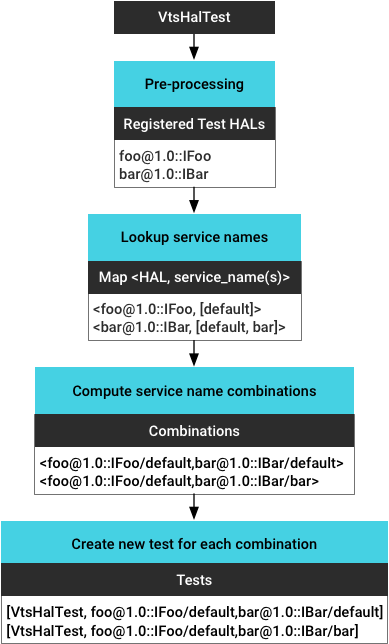
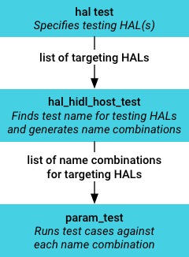

Android {{ androidPVersionNumber }} includes support for obtaining the service name of a given HAL instance based on the device on which Vendor Test Suite (VTS) tests are running. Running VTS HAL tests that are service name aware enables developers to automate testing vendor extensions, multiple HALs, and multiple HAL instances on both target- and host-side VTS test runs.
Each instance of the running HAL service registers itself with a service name.
In previous versions of Android, developers running VTS HAL tests were
required to set the correct service name for the test client in
getService() or leave the name empty and fallback to the default
service name. Disadvantages to this approach included:
In Android {{ androidPVersionNumber }}, developers can automatically get the service name for a given HAL instance based on the device under test. Advantages to this approach include support for testing:
graphics.composer HAL has two instances (one with service name
"default" and one with service name "vr"), VTS can identify both instances and
run the test against each of them.
To enable service name awareness for target-side testing, Android
{{ androidPVersionNumber }} includes a customizable test environment
(VtsHalHidlTargetTestEnvBase)
that provides interfaces to:
In addition, the VTS framework provides runtime support for:
vendor/manifest.xml).Example:

To setup your test environment for target-side service name aware testing:
testEnvironment based on
VtsHalHidlTargetTestEnvBase and register test HALs:
#include <VtsHalHidlTargetTestEnvBase.h>
class testEnvironment : public::testing::VtsHalHidlTargetTestEnvBase {
virtual void registerTestServices() override {
registerTestService<IFoo>();
}
};
getServiceName() provided by the test environment to pass
service name:
::testing::VtsHalHidlTargetTestBase::getService<IFoo>(testEnv->getServiceName<IFoo>("default"));
// "default" is the default service name you want to use.
main() and
initTest:
int main(int argc, char** argv) {
testEnv = new testEnvironment();
::testing::AddGlobalTestEnvironment(testEnv);
::testing::InitGoogleTest(&argc, argv);
testEnv->init(argc, argv);
return RUN_ALL_TESTS();
}
For additional examples, refer to
VtsHalCameraProviderV2_4TargetTest.cpp.
VTS host-side tests run test scripts on host side instead of test binaries on the target device. To enable service name awareness for these tests, you can use host side templates to run the same test script multiple times against different parameters (similar to the gtest parameterized test).

hal_hidl_host_test
(subclass of param_test) takes the registered testing HAL(s) from
test script, identifies the corresponding service name(s) for the testing HAL,
then generates service name combinations (for multi-HAL testing) as test
parameters. It also provides a method getHalServiceName() which
returns the corresponding service name according to the parameter passed to
the current test case.To setup your test environment for host-side service name aware testing:
TEST_HAL_SERVICES = { "android.hardware.foo@1.0::IFoo" }
getHalServiceName() and pass the name to init hal:
self.dut.hal.InitHidlHal(
target_type='foo',
target_basepaths=self.dut.libPaths,
target_version=1.0,
target_package='android.hardware.foo',
target_component_name='IFoo',
hw_binder_service_name
=self.getHalServiceName("android.hardware.foo@1.0::IFoo"),
bits=int(self.abi_bitness))
For additional examples, refer to
VtsHalMediaOmxStoreV1_0HostTest.py.
In previous versions of Android, VTS identified the testing HAL using the
<precondition-lshal> option configured in
AndroidTest.xml. This approach was difficult to maintain (as it
relied on developers to configure the test properly and update the
configuration accordingly) and inaccurate (as it contained only the package
and version info and not the interface info).
In Android {{ androidPVersionNumber }}, VTS identifies the testing HAL using service name awareness. The registered testing HALs are also useful for: